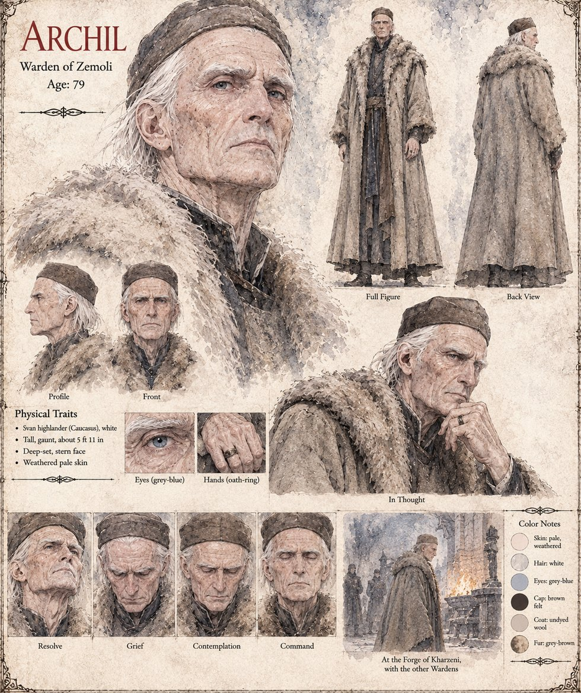

Archil
Warden of Zemoli · lawyer of the oldest unbroken oath in Vashkeni · 79
Warden of Zemoli, a valley of the Father whose tower was reputed to hold the oldest unbroken oath in Vashkeni, and a lawyer by trade. At the extraordinary session of the Council in the twenty-ninth year he sits bolt upright with his oath-ring on, as though the whole proceeding might at any moment be called upon to testify; by the summer of the thirtieth he is seventy-nine and has, for having sworn the oldest oath, the clearest view of what an oath was for.
He is one of three men who decide, in three valleys by three different roads, to be the only people in the history of the Quiver who refuse to ask the sky for anything. They are not friends. In the dark of Garren, at midnight, in the forge at Kharzeni, each with an arrow under his coat in the colours of its god, he gives the reason, last and shortest, as lawyers do: “I swore it to the Council,” he says, and then “The Council is dead. I am therefore released from the oath, and I do not propose to be released into the hand of a king.” The three arrows lie in the coals for an hour as though laid there to cool, and then it takes the best bellows in Vashkeni and the seven hours between midnight and dawn, the seeds going out at the sixth. The king has the three Wardens brought to Samaghvto in chains and asks each one question, whether the arrow has been unmade; each says that it has, and he says quietly that he would have done the same. It is Gurgen who has them hanged, in the Hall of Oaths, under the Father’s justice, for the breach of an oath, on the morning of the first of Havren. He knew that Archil’s point was sound, that an oath sworn to a Council cannot be broken once the Council is dead, and he read the sentence in the level voice regardless, because a Hierarch who found a lawyer correct in public would be obliged to find the next one correct as well.
The manuscript gives his age of seventy-nine, his valley, his trade, the ring, the forge and the words above. The sheet’s tall, gaunt build of about 5 ft 11 in, deep-set stern face, weathered pale skin, grey-blue eyes, long white hair, brown felt cap and undyed wool coat with a grey-brown fur collar are its own, as are its panels Resolve, Grief, Contemplation and Command and its portrait In Thought. Its scene, At the Forge of Kharzeni, with the other Wardens, follows the manuscript.
“The Council is dead. I am therefore released from the oath, and I do not propose to be released into the hand of a king.”